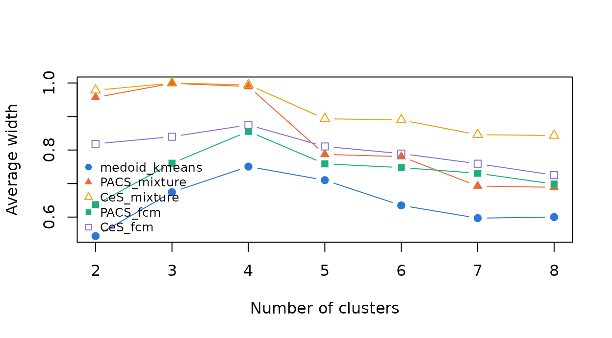

Silhouettes for soft and model-based clustering
Source:vignettes/soft-clustering.Rmd
soft-clustering.RmdSoft clustering methods, such as fuzzy c-means, probabilistic distance clustering and finite mixture models, give each observation a membership probability for every cluster. This vignette shows how Silhouette turns those probabilities into silhouette widths, how the different widths relate to one another, and which comparisons they support.
library(Silhouette)
suppressPackageStartupMessages(library(mclust)) # Mclust() needs mclust attached
X <- as.matrix(iris[, 1:4])
set.seed(1)
fm <- ppclust::fcm(X, centers = 3, nstart = 5) # fuzzy c-means
gm <- Mclust(X, G = 3, verbose = FALSE) # Gaussian mixtureWidths from membership probabilities
Write \(\gamma_{ik}\) for the
membership of observation \(i\) in
cluster \(k\), with \(\sum_k \gamma_{ik} = 1\).
softSilhouette() treats the memberships, or a
transformation of them, as a proximity matrix and applies the medoid or
PAC width to it (Bhat Kapu and Kiruthika
2024). The table gives the names used in that paper:
| Name | Call | Proximity | Type |
|---|---|---|---|
| PACS | softSilhouette(z) |
posterior \(\gamma_{ik}\) | similarity, PAC width |
| PPS | softSilhouette(z, method = "medoid") |
posterior \(\gamma_{ik}\) | similarity, medoid width |
| NLPPS | softSilhouette(z, prob_type = "nlpp", method = "medoid") |
\(-\log \gamma_{ik}\) | dissimilarity |
| PDS | softSilhouette(z, prob_type = "pd", method = "medoid") |
density \(f_k(x_i)\), computed as \(\gamma_{ik} / \hat\pi_k\) | similarity |
| CeS | cerSilhouette(z) |
largest membership \(\max_k \gamma_{ik}\) | certainty |
| DBS | dbSilhouette(z) |
\(\log(\gamma_{ic_i} / \gamma_{i\nu_i})\), scaled by its sample maximum (Menardi 2011) | log ratio |
PACS, PPS and NLPPS take the posterior probabilities as a similarity
(or, on the log scale, a dissimilarity) and assign each observation to
its largest membership. The PDS takes the component densities as the
similarity: for a mixture, \(\gamma_{ik} =
\pi_k f_k(x_i) / f(x_i)\), so \(\gamma_{ik} / \hat\pi_k = f_k(x_i) /
f(x_i)\) with \(\hat\pi_k = n^{-1}
\sum_i \gamma_{ik}\), and the PDS can be computed from the
memberships of any soft clustering algorithm. It assigns each
observation to its largest density, so it lies between 0 and 1. The
certainty silhouette lies between \(1/K\) and 1. The DBS of Menardi (2011) lies between 0 and 1, and the
most confidently assigned observation in the sample always has width 1;
Menardi summarizes it by the median, which is the default of
dbSilhouette().
avg <- function(s) summary(s, print.summary = FALSE)$avg.width
c(PACS = avg(softSilhouette(gm$z)),
PPS = avg(softSilhouette(gm$z, method = "medoid")),
NLPPS = avg(softSilhouette(gm$z, prob_type = "nlpp", method = "medoid")),
PDS = avg(softSilhouette(gm$z, prob_type = "pd", method = "medoid")),
CeS = avg(cerSilhouette(gm$z)),
DBS = avg(dbSilhouette(gm$z)))
#> PACS PPS NLPPS PDS CeS DBS
#> 0.9761876 0.9854540 0.9924982 0.9847254 0.9880938 0.1575264These are different indices on different scales. Compare each one
across fits, never one index with another. Because they depend only on
the memberships, they describe the clustering as the fitted model sees
it; the distance-based widths of Silhouette() describe it
in the data space.
Fuzzy c-means: soft and distance-based widths coincide
For fuzzy c-means with fuzzifier \(m\) and squared Euclidean distances \(d_{ik}\) to the prototypes, the memberships are \(u_{ik} = t_{ik}^{-1} / \sum_j t_{ij}^{-1}\) with \(t_{ik} = d_{ik}^{1/(m-1)}\) (Bezdek 1981). The ratio of two memberships is therefore the inverse ratio of the corresponding \(t_{ik}\):
\[ \frac{u_{i\nu_i}}{u_{ic_i}} = \frac{t_{ic_i}}{t_{i\nu_i}}, \qquad\text{so}\qquad 1 - \frac{u_{i\nu_i}}{u_{ic_i}} = \frac{t_{i\nu_i} - t_{ic_i}}{t_{i\nu_i}}. \]
The left-hand side is the "pp" medoid width and the
right-hand side is the distance-based medoid width on the matrix \(T = [t_{ik}]\). The same argument holds for
the PAC width. With the default \(m =
2\), \(T\) is exactly the matrix
d that ppclust::fcm() returns:
all.equal(softSilhouette(fm$u, method = "medoid")$sil_width,
Silhouette(fm$d)$sil_width)
#> [1] TRUEFor fuzzy c-means, then, the membership-based and distance-based
widths are the same evidence, and the rows of
calSilhouette() that look independent are not. With \(m = 3\), \(T\) holds Euclidean distances, and the
"pp" widths reproduce the simplified silhouette of Van der Laan et al. (2003).
Averaging and the exponent a
Every width function offers three averages.
average = "crisp" is the plain mean and
average = "median" the median.
average = "fuzzy" is the weighted mean of Campello and Hruschka (2006), with weights \(w_i = (\gamma_{i(1)} - \gamma_{i(2)})^a\),
where \(\gamma_{i(1)}\) and \(\gamma_{i(2)}\) are the two largest
memberships of observation \(i\).
Observations whose two largest memberships are close count for less. The
exponent a controls how strongly:
sapply(c(a0 = 0, a0.5 = 0.5, a1 = 1, a2 = 2, a4 = 4), function(a)
avg(softSilhouette(fm$u, average = "fuzzy", a = a)))
#> a0 a0.5 a1 a2 a4
#> 0.7541271 0.8094889 0.8424242 0.8799106 0.9151991With a = 0 every weight is 1 and the fuzzy average
equals the crisp one. Larger exponents shift weight toward decisively
assigned observations and raise the average, so fuzzy averages are
comparable only at the same a.
Comparing soft clustering algorithms
To compare algorithms fitted to the same data with the same number of
clusters, compute each width for every fit. Pass the memberships to
Silhouette() as prob_matrix (or the labels as
cluster) so that each observation keeps the cluster the
algorithm assigned.
P_fcm <- sqrt(fm$d) # Euclidean distances
P_gmm <- as.matrix(proxy::dist(X, t(gm$parameters$mean))) # to the component means
data.frame(
algorithm = c("fuzzy c-means", "Gaussian mixture"),
distance_medoid = c(avg(Silhouette(P_fcm, prob_matrix = fm$u)),
avg(Silhouette(P_gmm, prob_matrix = gm$z))),
membership_pp = c(avg(softSilhouette(fm$u)), avg(softSilhouette(gm$z))),
ARI_species = c(adjustedRandIndex(max.col(fm$u), iris$Species),
adjustedRandIndex(max.col(gm$z), iris$Species)))
#> algorithm distance_medoid membership_pp ARI_species
#> 1 fuzzy c-means 0.6582146 0.7541271 0.7294203
#> 2 Gaussian mixture 0.6129719 0.9761876 0.9038742The two families disagree. Distances to cluster means reward the spherical, equal-spread clusters that fuzzy c-means looks for, so the distance-based width prefers fuzzy c-means. Posterior probabilities reward decisive assignments, which the mixture makes, so the membership-based width prefers the mixture. Here the mixture also agrees better with the species (the adjusted Rand index is shown only as a check, since labels are rarely available). Neither family is a substitute for deciding what kind of cluster the analysis is after.
Choosing the number of clusters
For a distance-based width, the number of clusters is usually read where the average is largest. The widths computed from memberships behave differently: their average over \(k\) typically starts near 1 and falls, and Bhat Kapu and Kiruthika (2024) read the number of clusters from the reverse elbow drop, the value of \(k\) after which the average drops sharply. Below, that reading is made automatic as the \(k\) just before the largest one-step drop; the DBS is read from its local maxima, following Menardi (2011). Consider four well-separated groups of different spread, clustered by a Gaussian mixture and by fuzzy c-means:
set.seed(42)
mu <- rbind(c(0, 0), c(6, 0), c(0, 6), c(6, 6))
sds <- c(0.8, 1.2, 1, 1.5)
id <- rep(1:4, c(120, 80, 100, 60))
Y <- mu[id, ] + matrix(rnorm(2 * length(id)), ncol = 2) * sds[id]
res <- t(sapply(2:8, function(k) {
g <- Mclust(Y, G = k, modelNames = "VVV", verbose = FALSE)
set.seed(k)
km <- kmeans(Y, k, nstart = 20)
fc <- ppclust::fcm(Y, centers = k)
c(k = k,
medoid_kmeans = avg(Silhouette(proxy::dist(Y, km$centers))),
PACS_mixture = avg(softSilhouette(g$z)),
CeS_mixture = avg(cerSilhouette(g$z)),
PACS_fcm = avg(softSilhouette(fc$u)),
CeS_fcm = avg(cerSilhouette(fc$u)),
bic = g$bic)
}))
round(res, 3)
#> k medoid_kmeans PACS_mixture CeS_mixture PACS_fcm CeS_fcm bic
#> [1,] 2 0.543 0.957 0.978 0.637 0.818 -3443.680
#> [2,] 3 0.674 0.999 1.000 0.761 0.840 -3175.203
#> [3,] 4 0.751 0.990 0.995 0.856 0.875 -3139.315
#> [4,] 5 0.710 0.787 0.893 0.759 0.811 -3171.537
#> [5,] 6 0.635 0.780 0.890 0.748 0.789 -3200.475
#> [6,] 7 0.597 0.693 0.846 0.731 0.759 -3226.441
#> [7,] 8 0.600 0.689 0.843 0.699 0.725 -3258.266
cols <- c("#2a78d6", "#eb6834", "#eda100", "#1baf7a", "#8a6fd1")
matplot(res[, "k"], res[, 2:6], type = "b", pch = c(19, 17, 2, 15, 0), lty = 1,
col = cols, xlab = "Number of clusters", ylab = "Average width")
legend("bottomleft", colnames(res)[2:6], pch = c(19, 17, 2, 15, 0), col = cols,
bty = "n", cex = 0.8)
The distance-based width is largest at \(K = NA\) and BIC selects \(K = NA\). Read by the reverse elbow drop, the PACS and certainty averages point to \(K = 4\) and 4 for the mixture and to 4 and 4 for fuzzy c-means. Their maximum, by contrast, is not a useful guide, since the averages start near 1. The number of clusters suggested by these widths depends on the algorithm that produced the memberships, on the width and on the averaging, so report all three, and the reading used, with the result.
Pitfalls
Which partition is scored. Every width function
scores one partition: the labels in cluster if given,
otherwise the largest membership in prob_matrix, otherwise
the closest cluster in the proximity matrix (the PDS, below, is the
exception). calSilhouette() uses the same labels in every
row except the PDS rows. For a mixture, the most probable component and
the nearest mean can differ; those observations are closer to another
cluster’s mean than to their own and receive negative distance-based
widths:
c(nearest_mean_differs = sum(max.col(gm$z) != max.col(-P_gmm)),
negative_widths = sum(Silhouette(P_gmm, prob_matrix = gm$z)$sil_width < 0))
#> nearest_mean_differs negative_widths
#> 11 11Without prob_matrix or cluster,
Silhouette() would instead assign every observation to its
nearest mean, scoring a different partition from the one the mixture
produced.
The PDS assigns by density. The PDS places each
observation in the cluster with the largest density \(f_k(x_i)\), which ignores the mixing
proportions, whereas the other widths use the largest membership. When
the cluster weights differ, the two can disagree, and the PDS then
scores a slightly different partition. To score the mixture’s own
partition with the PDS, pass it as cluster; observations
that then receive negative widths are those for which the neighboring
component has the higher density:
set.seed(4)
z <- c(rnorm(270, 0), rnorm(30, 2.5))
g2 <- Mclust(z, G = 2, modelNames = "E", verbose = FALSE)
pds <- softSilhouette(g2$z, prob_type = "pd", method = "medoid")
pds_map <- softSilhouette(g2$z, prob_type = "pd", method = "medoid",
cluster = max.col(g2$z))
c(density_label_differs = sum(pds$cluster != max.col(g2$z)),
negative_default = sum(pds$sil_width < 0),
negative_with_map_labels = sum(pds_map$sil_width < 0))
#> density_label_differs negative_default negative_with_map_labels
#> 44 0 44Zero probabilities and the density-based width.
Mixture posteriors often underflow to exactly zero for well-separated
data. A zero neighboring probability makes the log ratio infinite;
dbSilhouette() then gives that observation width 1, scales
the other widths by the largest finite log ratio, and warns:
data(thyroid, package = "mclust")
gt <- Mclust(scale(thyroid[, -1]), G = 3, verbose = FALSE)
db <- dbSilhouette(gt$z, average = "crisp")
#> Warning: 7 observation(s) have a zero membership in the neighboring (or
#> assigned) cluster, so their log ratio is infinite; their widths are set to 1
#> (or -1) and the other widths are scaled by the largest finite log ratio.
avg(db)
#> [1] 0.08523792The finite log ratios can still be very large (a posterior of \(10^{-300}\) gives a log ratio near 690), and the largest one sets the scale, so the average stays small. The individual widths still rank observations by how decisively they are assigned; the average should not be compared with that of a fit without such extreme probabilities.
Session information
sessionInfo()
#> R version 4.6.2 (2026-10-29)
#> Platform: x86_64-pc-linux-gnu
#> Running under: Ubuntu 26.04.1 LTS
#>
#> Matrix products: default
#> BLAS: /usr/lib/x86_64-linux-gnu/openblas-pthread/libblas.so.3
#> LAPACK: /usr/lib/x86_64-linux-gnu/openblas-pthread/libopenblasp-r0.3.32.so; LAPACK version 3.12.0
#>
#> locale:
#> [1] LC_CTYPE=C.UTF-8 LC_NUMERIC=C LC_TIME=C.UTF-8
#> [4] LC_COLLATE=C.UTF-8 LC_MONETARY=C.UTF-8 LC_MESSAGES=C.UTF-8
#> [7] LC_PAPER=C.UTF-8 LC_NAME=C LC_ADDRESS=C
#> [10] LC_TELEPHONE=C LC_MEASUREMENT=C.UTF-8 LC_IDENTIFICATION=C
#>
#> time zone: UTC
#> tzcode source: system (glibc)
#>
#> attached base packages:
#> [1] stats graphics grDevices utils datasets methods base
#>
#> other attached packages:
#> [1] mclust_6.1.3 Silhouette_0.9.7
#>
#> loaded via a namespace (and not attached):
#> [1] kpeaks_1.1.0 sass_0.4.10 generics_0.1.4 tidyr_1.3.2
#> [5] rstatix_1.1.0 lhs_1.3.0 digest_0.6.39 magrittr_2.0.5
#> [9] evaluate_1.0.5 grid_4.6.2 RColorBrewer_1.1-3 fastmap_1.2.0
#> [13] jsonlite_2.0.0 ppclust_1.1.0.1 backports_1.5.1 Formula_1.2-6
#> [17] purrr_1.2.2 scales_1.4.0 textshaping_1.0.5 jquerylib_0.1.4
#> [21] abind_1.4-8 cli_3.6.6 rlang_1.3.0 cachem_1.1.0
#> [25] yaml_2.3.12 otel_0.3.0 tools_4.6.2 ggsignif_0.6.4
#> [29] dplyr_1.2.1 ggplot2_4.0.4 ggpubr_1.0.0 broom_1.0.13
#> [33] vctrs_0.7.3 R6_2.6.1 proxy_0.4-29 lifecycle_1.0.5
#> [37] car_3.1-5 fs_2.1.0 htmlwidgets_1.6.4 inaparc_1.2.1
#> [41] MASS_7.3-66 ragg_1.5.2 pkgconfig_2.0.3 desc_1.4.3
#> [45] pkgdown_2.2.1 bslib_0.12.0 pillar_1.11.1 gtable_0.3.6
#> [49] glue_1.8.1 Rcpp_1.1.2 systemfonts_1.3.2 xfun_0.62
#> [53] tibble_3.3.1 tidyselect_1.2.1 knitr_1.52 farver_2.1.2
#> [57] htmltools_0.5.9 carData_3.0-6 rmarkdown_2.32 compiler_4.6.2
#> [61] S7_0.2.2